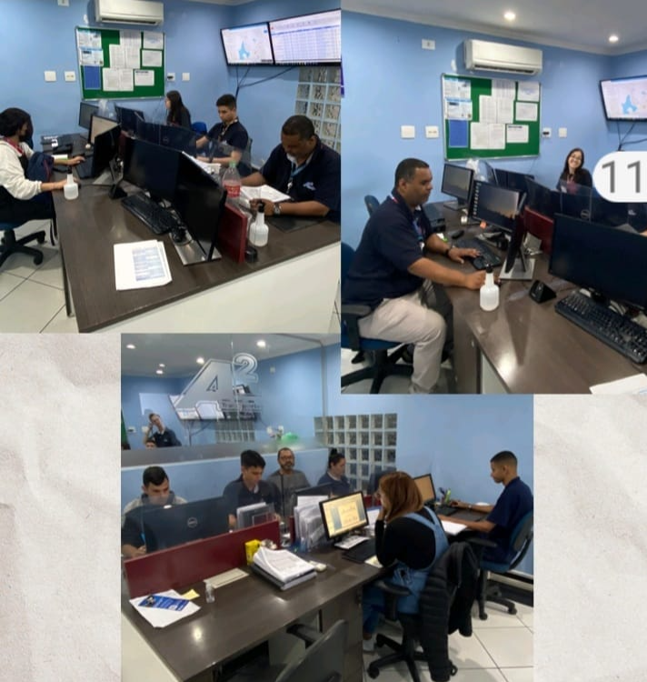
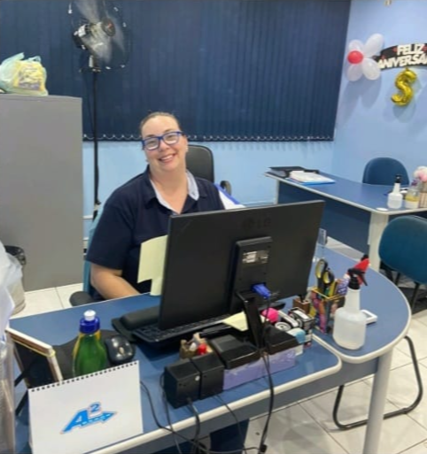
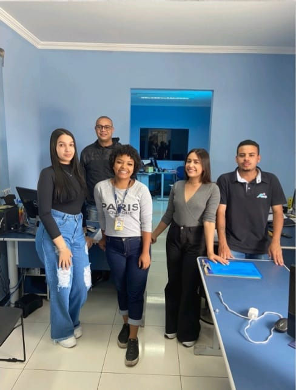
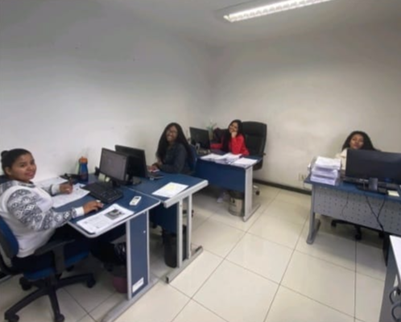

TRANSPARÊNCIA
A página Transparência da A2 Transportes visa disponibilizar informações sobre os departamentos da empresa. Cada qual em sua qualificação, trabalhando para oferecer a cada dia um serviço mais eficiente aos seus usuários.
A LGPD NA A2 TRANSPORTES
A2 Transportes LTDA adota todas as medidas necessárias para o cumprimento dos requisitos da Lei Geral de Proteção de Dados (LGPD) – Lei nº 13.709 – a qual dispõe sobre o tratamento e a proteção de dados pessoais, protegendo todos os dados em sua posse, em plena conformidade com os direitos fundamentais da pessoa humana.
Como é gerida a LGPD dentro da A2 Transportes?
A Autoridade Nacional de Proteção de Dados (ANPD), órgão governamental que implementa a lei e fiscaliza o cumprimento das normas pelas empresas, determina que cada empresa tenha profissional encarregado do tratamento de dados pessoais, que tem o papel de administrar o fluxo de dados da organização, auditar todas as áreas – para verificar se as normas estão sendo cumpridas – e representar a empresa em todas as interações com a ANPD. Este profissional, denominado DPO (Data Protection Officer), responde diretamente ao conselho da empresa.
Alguns destes dados incluem o nome das pessoas, data de nascimento, endereço, dados bancários, fotografias, contato telefônico e e-mail, entre outras informações.
E como a A2 Transportes será impactada?
No âmbito da empresa, lidamos com uma série de dados de pessoas físicas – desde os prestadores de serviço e colaboradores, até alguns usuários do transporte público.
Por termos acesso à diversos destes dados, adotamos diversas medidas protetivas para cumprirmos as obrigatoriedades da legislação.
Setor Monitoramento
Acompanhando nossa frota em tempo real, com o objetivo de auxiliar o motorista no viário e prestar esclarecimento para SPTRANS.
Setor Operacional
Setor responsável pelos cadastros das frotas.
Setor Compras
Responsável pelas compras de peças e materiais necessários para manutenção na empresa.
Higienização dos Veículos
Higienização de nossos veículos, afim de prestar um atendimento de eficiência e qualidade aos nossos clientes.
Setor Sinistro e Resam
Equipe qualificada para dar atendimento em caso de sinistro aos motoristas e terceiros.
Equipe qualificada para tratar de regulamentos da SPTRANS-RESAM
Setor Jurídico
Responsável por alinhar as operações da empresa com os dispositivos legais preestabelecidos, garantindo que todas as suas ações estejam em conformidade com as leis.